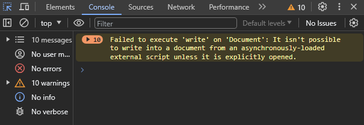
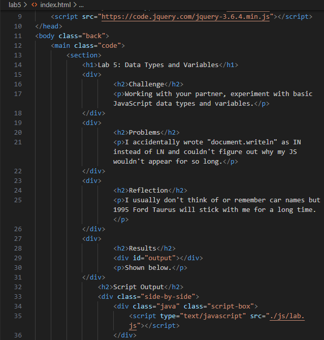
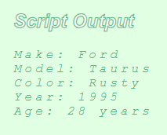

Lab 14: Debugging Tools & Strategies
Challenge
With a partner, use debugging knowledge to fix old assignments.
Problems
I had trouble figuring out how to resolve the warning for document.write that I got on lab 5, but I got help from my lab partner Tien :>
Results
Shown Below~
Debugging

When I was inspecting back on my Lab 5 through console, I found warnings on how there was a failure in executing 'write' on 'Document'.
I tried searching up what this meant and how to resolve it but I got different suggestions on how to write document.write().
I asked for help from my lab partner Tien and they helped me understand that I didn't have to keep the defer link in my html header if I've already linked the script in my output, so I removed DEFER and it helped remove the warnings!